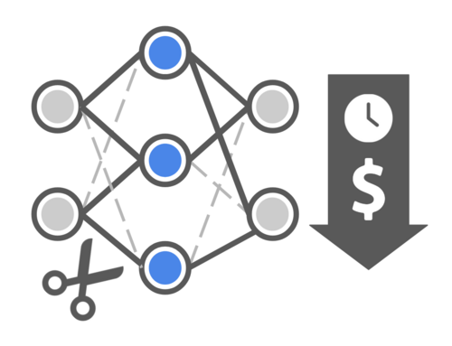
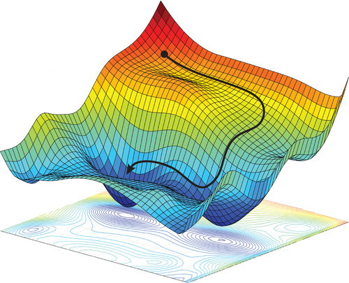
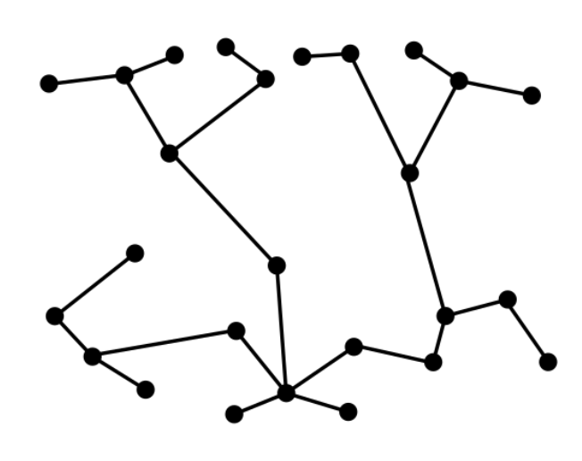
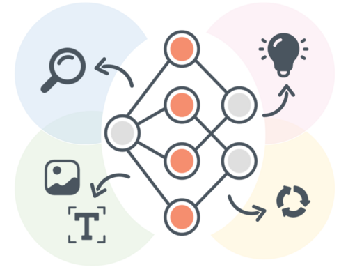
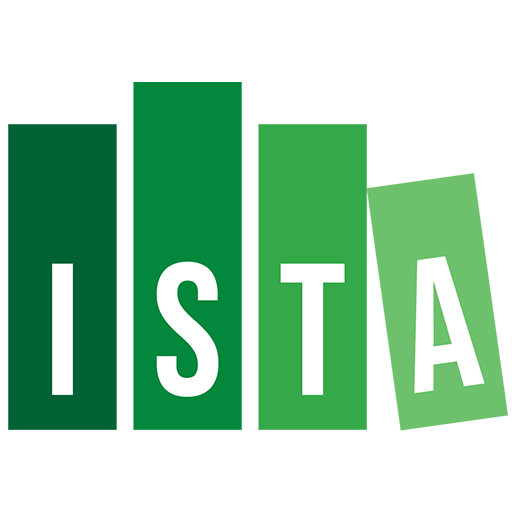

Research Focus

Optimization for Model Compression As modern AI models, particularly deep neural networks, grow increasingly large and computationally demanding, model compression has become essential for enabling broader and more sustainable use of AI technologies. We develop optimization methods to compress large models so that they can run more efficiently at training and inference without significantly compromising their performance.

Optimization for Deep Learning Optimization has been central to the success of deep learning, yet there remain many challenges to address such as non-convexity, high dimensionality, and scalability. We study both theoretical foundations—such as convergence guarantees and generalization properties—and practical algorithms, including stochastic, adaptive, and second-order methods, so as to come up with efficient and principled optimization methods.

Optimization for Collaborative Learning Collaborative machine learning is a promising learning paradigm that allows participants to work together to train a model without necessarily sharing their raw data. However, frequent exchange of updates can overwhelm networks, especially with large models or slow connections. We address such a unique set of challenges due to its distributed and often decentralized nature by developing efficient and scalable solutions.

Optimization for Other Applications Optimization is a versatile tool that can be applied to a wide range of machine learning applications. We are currently focused on addressing challenges surrounding large language models, particularly those involving learning in black-box environments, continual adaptation, and multi-modal contexts.
Collaborators
We actively collaborate with leading research groups worldwide.
